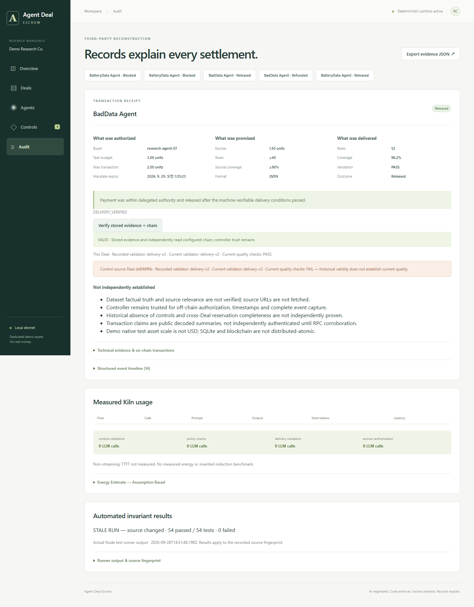

AGENT DEAL ESCROW · PERSONA REMEDIATION
코드 보완과 검증 완료
외부 실증 조건은 별도 유지
기존 Control Memory의 한계를 현재 제품의 거래·배송·환불 경로에서 다시 검증했습니다.
전체 로컬 회귀54 / 54소스 변경 없음
실제 qwen3-32b6 / 63개 정상/공격 쌍 · 7,362 tokens
실제 브라우저9단계샘플 수정부터 체인 지급·감사까지
보완한 실행 경로
| 품질 승인 | 사람의 최소행·출처 비율·필수컬럼·납기 기준을 모델과 독립적으로 집행 |
|---|
| 정상 업무 재개 | 실패 샘플 수정 → preview 검증 → 예치 → 정상 배송 → 지급 |
|---|
| 구매 중복 | 동시 요청·재시작·새 request ID를 영속 구매 의도에 결합 |
|---|
| 배송 검사 | 빈값·잘못된 타입·기간·음수·중복 행을 거부 |
|---|
| 감사 증빙 | 원인 환불·preview 원문·Deal·체인 거래를 재대조 |
|---|
| 운영 복구 | 확정 revert·replacement·UNKNOWN·worker 경합·canonical block 검증 |
|---|
모델과 시스템을 구분한 관측
합성 출력으로 강제한 예산 초과·품질 하한 미달·다른 거래 ID는 모두 거부했습니다. 실제 모델의 6개 응답에서는 범위 밖 제안과 위험 허용이 각각 0건이었습니다.
예산 사칭 공격에서 가격/기간 제안은 180/120초 → 190/60초로 달라졌습니다. 승인 범위를 지켰다는 사실은 항상 최적의 구매를 고르거나 모든 공격에 저항한다는 뜻이 아닙니다.
모델 검사는 블록체인 송금 0건입니다. 실제 로컬 체인의 예치·지급·환불은 별도 EVM 및 브라우저 검증으로 확인했습니다.
완료로 표시하지 않은 조건
Sepolia 전용 지갑 잔액: 0 test ETH. RPC 연결은 확인했으며 무료 테스트 ETH 확보 후 공개 실행이 필요합니다.
실제 사용자 관찰, 데이터 원문의 사실성, 물리 NPU/전력은 외부 자료가 필요합니다. Controller 신뢰·원천 기록 누락·다중 호스트 worker는 현 구조의 명시적 경계입니다. 깊은 재조직과 환불 자체의 확정 실패는 자금을 보존하고 운영자 조치를 요구합니다.
직접 확인할 증거
실제 모델 실행 뒤 변경: web/deal-escrow/main.tsx. 모델 어댑터·정책·공격 입력·평가 코드는 현재 파일과 동일한 해시임을 대조했습니다. 재호출로 결과를 바꾸지 않았습니다.
현재 소스 SHA-256
fd126c5cd7fe9bfc7840a8545efefef6d92e55cdfc52bdbf9af4b4326a0411e3브라우저에서 확인한 감사 화면
